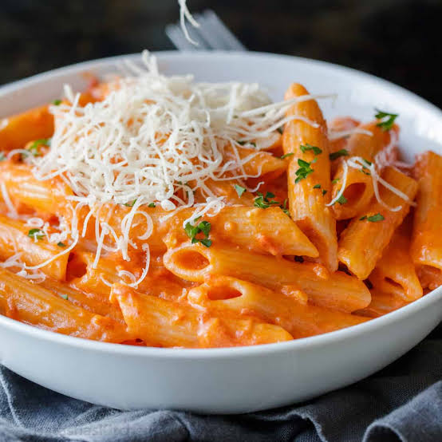

Penne Alla Vodka

Description
Silky and creamy tomato pasta.
Ingredients
- 2 tablespoons of olive oil
- 1 banana shallot or ½ onion, finely chopped
- 3 garlic cloves, crushed
- ¼ tsp chilli flakes
- 100g tomato purée
- 5 tbsp vodka
- 100ml double cream
- 200g penne or rigatoni pasta
- 30g grated parmesan or vegetarian alternative, plus extra to serve
- small handful of basil leaves, to serve
Steps
- Heat the oil in a large frying pan or casserole dish. Add the shallot and a large pinch of salt and gently fry over a low heat for 10 mins or until softened and translucent. Add the garlic and chilli flakes and cook for 30 seconds. Stir through the tomato purée, cook for 2 mins, then stir through the vodka and cook for 3 mins. Quickly stir through the cream to combine, then remove from the heat.
- Cook the pasta in salted water following pack instructions. Drain and reserve 150ml cooking water. Add roughly 50ml of the water to the tomato sauce, then tip in the pasta and cheese, tossing everything together over a low heat until well coated and glossy (loosen with a splash more of the cooking water if it’s a little dry). Season to taste, then serve with a sprinkling of the extra parmesan, a good grinding of black pepper and the basil leaves scattered over the top.